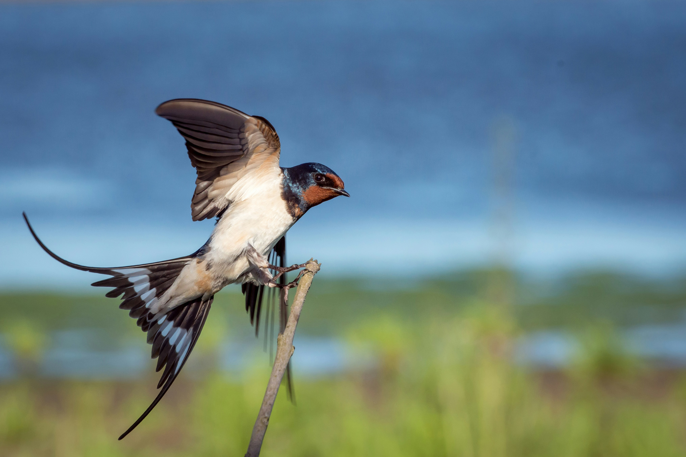
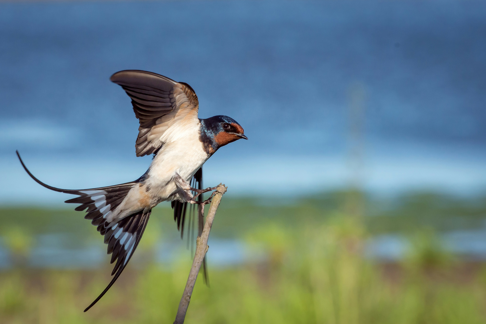

Our Story
Welcome to Pacific Trails Resort, a hidden gem nestled along the breathtaking Pacific Coast. Our journey began with a vision to create a space where nature lovers, adventure seekers, and relaxation enthusiasts can reconnect with the outdoors in a unique and unforgettable way.
We offer guests an opportunity to experience the beauty of the coast through exciting outdoor activities, comfortable yurts, and a welcoming environment that makes every stay a memorable adventure.
Our Mission
At Pacific Trails Resort, our mission is to provide a one-of-a-kind outdoor experience that blends adventure and luxury. Whether you're seeking a peaceful retreat or an action-packed vacation, we’re here to offer the best of both worlds. From hiking to kayaking, bird watching to luxury camping, we aim to offer a wide variety of activities that allow guests to enjoy nature at its finest.
Why Choose Us?
What makes us different? It's our commitment to offering an authentic outdoor experience without sacrificing comfort. Our yurts provide a cozy and luxurious escape, our activities are designed for adventure and relaxation, and our team is dedicated to ensuring you have the best possible stay.
Our Features
- Stunning Locations: Immerse yourself in the natural beauty of the Pacific Coast.
- Unique Accommodation: Stay in luxurious yurts that blend comfort with the great outdoors.
- Exciting Activities: Explore hiking trails, kayaking adventures, and bird watching.
- Sustainable Practices: We’re committed to preserving nature for future generations.

 

Meet the Team
Our team is a passionate group of nature lovers and hospitality experts who are dedicated to making your stay unforgettable. Whether it's guiding you on a nature walk or ensuring you have everything you need for a perfect getaway, we're here to help every step of the way.